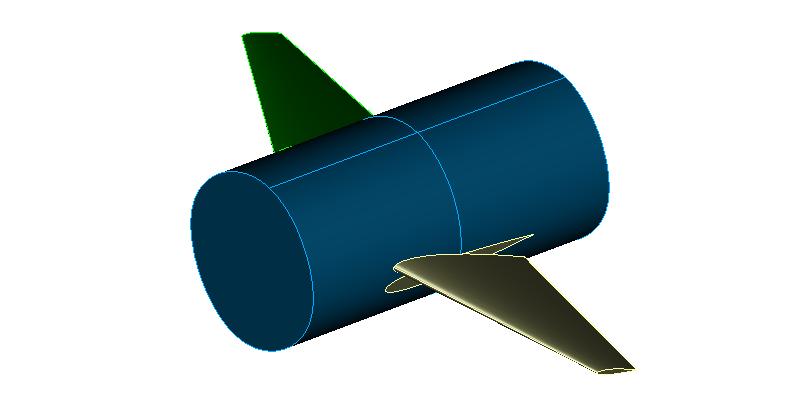

We are happy to announce the release of TiGL 3.2.2.
Although it is a bugfix release, TiGL 3.2.2 comes with the support of canard style flaps. This is a minor modification of the trailing edge device definition, that allows to position the hinge points of the flaps outside of the wing via an optional translation vector. In addition, a trailing edge device is now allowed to also include the leading edge such that canards can be made possible.
TiGL 3.2.2 fixes the following issues:
- CPACS versions headers could not been correctly parsed, if the version number contained a patch version (issue #830). This is now fixed. TiGL now is able to support semantic versioning.
- Fixed multiple errors that occured during the computation of wing cells (issues #815, #829, #840).
- Fixed computation of the wing aspect ratio (issue #827). For the computation, the wing cord face has to be projected onto a reference plane according to the definition. We added a heuristic that figures out, which reference plane to choose.
- Fixed multiple crashes in TiGL Viewer when displaying control surface devices, in particular if they were defined incorrectly (issue #851).
- Improved robustness of export functions. The export now tries to export as much as possible, even if one component failed to built (issue #853).
For the python bindings, we also addresses the following issues:
- Added tigl3 conda packages for python 3.9.
- Fixed loading python bindings with python 3.8 due to a changed DLL loading policy (issue #842).
- Fixed a crash in the python bindings due to wrong memory handling (issue #823).